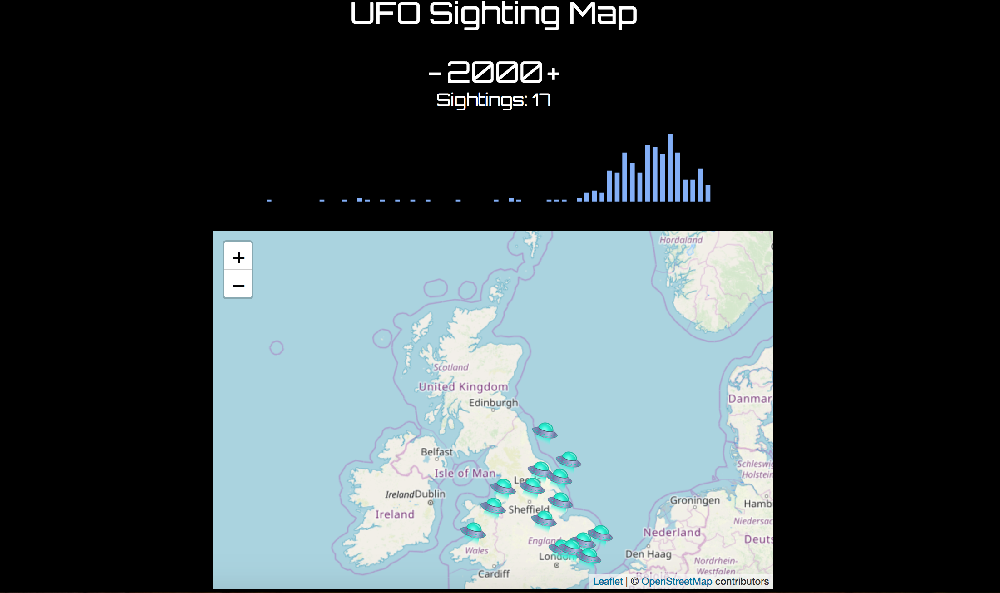

About Me

I am presently seeking employment in a technology-centric role with a focus on programming (e.g. web or software development) for the months up until the beginning of September 2019, when I will begin on an exciting graduate technology/software development programme. During this time I am seeking employment which will enable me to further build on the skills developed while studying for an MSc in Computing and IT at the University of St Andrews, which I have recently completed with Distinction. This degree has given me experience in a range of technologies including HTML5, CSS, Bootstrap, Foundation, Javascript and jQuery, Node.js, Express.js, CouchDB, mySQL, and Tableau. I am also presently learning React.
I am a keen learner, and discovered a passion for coding after taking up programming as a hobby through online courses. Prior to deciding to change field, my career was primarily in financial services regulation at the Bank of England, with a focus on digital communications and consumer protection policy development.
Curriculum Vitae
- Front-end web development
Capable of developing and testing valid and accessible responsive websites with Foundation or pure HTML5/CSS3. Prior to my current degree, I built Sharepoint sites and created effective content structures for Bank of England web and intranet pages.
- Web application development
During my degree I have gained experience developing single-page web applications using Javascript/jQuery and Express.js/Node.js (both individually and collaboratively) and using Git for project workflow management. Projects created for this course included a quiz game, a multiplayer checkers game, two games for Latin language learning, a Twitter-style messaging web application, and a forum incorporating a database backend and the use of a number of APIs for local weather, mapping, and news.
- Database maintenance and data analysis/manipulation
Experience of designing, building and querying relational databases using MySQL, as well as visually representing spreadsheet data using the d3.js and c3.js libraries.
- Drafting effective communications
Significant experience of developing clear and concise written outputs for communication by web, print and presentation to internal (working level and senior) and external (public and industry) stakeholders of the Bank of England. This entailed summarising complex technical and legal subjects in an accessible yet legally sound style.
- Stakeholder management and teamworking
Experience with coordinating and/or collaborating on projects (e.g. policy/statutory oversight development, policy/statutory oversight consultations and communications outputs) that required input from a wide range of internal and external stakeholders including technical and legal staff, senior committees, and members of the financial services industry and public.
-
University of St Andrews (September 2017 - August 2018) – MSc Computing and Information Technology - Distinction
- Web technologies:
Provided practical static and responsive website development experience, including testing for user experience, accessibility, browser compatibility and HTML/CSS validation.
- Programming Principles and Practice & Masters Programming Projects:
Two modules providing experience programming and testing single-page web applications, both independently and collaboratively, using Javascript, jQuery, Express.js, Node.js and other external libraries and APIs. Key outcomes included developing a quiz game, a messaging application, a multiplayer checkers game and a forum for local towns with API integration for weather, location mapping and news.
- Database Management Systems:
Provided experience of relational database design, development and querying via mySQL.
- Data Visualisation:
Provided experience of designing and developing interactive visualisations of datasets using Tableau and the D3.js Javascript library.
- Information Security Management:
Studied key data protection concepts, principles and practices including threat assessment, authentication, cryptography, network protection, penetration testing and information gathering (including port scanning), and key regulations and standards.
- Data Ethics and Privacy:
Studied key issues and regulation relating to the ethical handling of data, latterly focusing on the DGPR (including conducting mock Data Protection Impact Assessments).
- Dissertation:
Design and development of interactive Latin language learning games for the University of St Andrews School of Classics. These were single-page word matching game applications developed mainly using jQuery, one of which included a user account system underpinned by a Node.js/Express.js REST API and a CouchDB noSQL database.
- Web technologies:
-
University of St. Andrews 2008/09 - MLitt International Business – Distinction
- Dissertation:
An examination into cross media marketing synergy between the videogame and music industries.
- Key courses:
Global Business Studies, International Marketing, E-business, Marketing and Society, Corporate Finance and Accounting in a Global Context, and Managing Human Resources.
- Dissertation:
-
University of St. Andrews 2004- 2008 – MA (Hons) Economics & International Relations – 2:1
- Key courses:
Advanced Macroeconomics, Advanced Microeconomics, Econometrics, International Security, The return of Great Power Politics, Economics of Social Life, and Ethics and World Politics.
- Key courses:
-
Bank of England Prudential Regulation Authority (BoE PRA) / Financial Services Authority (FSA)
Various roles (April 2012-June 2017)
-
Analyst - Recovery and Compensation Team (Prudential Policy Directorate - Structural Policy Division) (January 2015 – June 2017)
Contributed to the development of consumer protection policy and statutory oversight of the Financial Services Compensation Service (FSCS) by:
- Working on BofE/PRA policy approach to matters relating to Insurance Guarantee Schemes.
- Contributing to the assessment of the FSCS’s budget and key senior appointments and work to develop an improved approach to the PRA’s delivery process for FSCS oversight, including revising relevant MoUs. These tasks included drafting relevant proposals for PRA Board, industry and public stakeholders.
-
Associate - Solvency II Communications Team (October 2013 - January 2015)
Contributed to internal and external digital and non-digital communications of the PRA's implementation of Solvency II (SII) insurance capital adequacy regime in the UK by:
- Redesigning and maintaining the PRA SII implementation team’s intranet and web pages.
- Owning a weekly internal digital newsletter on SII legislation progress and implementation.
- Compiling regular Management Information for PRA Board on comms outputs and reach.
- Preparing and reviewing presentations on regulatory requirements for industry stakeholders.
-
Associate - Insurance Group Supervision (April 2012 - October 2013)
Contributed to prudential supervision of a UK life insurer through:
- Governance tasks including reviewing firm Board effectiveness and executive incentivisation, reviewing prospective key executives, and participating in supervisory interviews.
- Analysing financial, regulatory, and operational risk reports to inform supervisory strategy.
- Coordinating and hosted strategic meetings with international regulatory bodies.
-
Analyst - Recovery and Compensation Team (Prudential Policy Directorate - Structural Policy Division) (January 2015 – June 2017)
-
Promontory Financial Group - Analyst (Contract) (June 2010 - February 2011)
Supported consulting teams and senior staff of a financial services regulatory consultancy by:
- Contributing to reports and materials for public and private sector clients including Board effectiveness reviews and financial promotions workshops.
- Guitar:
I am a keen guitarist, and prior to commencing my degree I spent a very rewarding month volunteering with The Guitar Social, which -in addition to social events and courses- provides free music tuition to people affected by disabilities, mental health issues, or homelessness amongst other considerations.
- Comedy:
While at University I took the opportunity to get involved with the Comedy Society, contributing a number of articles to the satirical student news site Salvator News, as well as contributing material for live panel and sketch shows.
Front-end projects
The links below lead to a selection of projects developed as part of the MSc in Computing and IT, or as projects made since then to further develop my skillset.
Responsive web pages
Italia tours test webpage
A sample website for a fictitious travel agency made using the Foundation framework for a Web Technologies class. Demonstrates features such as the carousel, accordion, and sticky "Magellan" navigation element.
Agatha Christie fan page
Inspired by the FreeCodeCamp tribute page challenge, this is a small art deco-style responsive website made using pure HTML5 and CSS3, including CSS Grid and Flexbox. Resize the page to see decorative elements change and certain text elements move into to mobile-friendly horizontally scrolling containers.
More to come...
This page will be updated with further projects in time.
Web applications
UFO sighting map
An interactive map of UK-based UFO sightings using Leaflet.js and D3 to visualise a Kaggle dataset.
Videogame sales charts
Bar chart visualisation of the 100 top-selling videogames made for a data visualisation class using d3.js. It can be viewed according to various criteria and filters, and displays further data via tooltips.
Album Data Table
A table of data about best-selling albums that can be filtered by single or multiple criteria.
More to come...
This page will be updated with further projects in time.
Games
React Quest
A work-in-progress retro-style adventure game made to try out the React library (and because I've always wanted to make a text adventure). Some refinement is still needed to the parser, and more rooms and puzzles will be added.
Latin synonym game A
A Latin synonym-matching game developed for my dissertation, made using jQuery. Match the grey word tiles to the orange word tiles that they are synonymous with. Please view in Chrome or Safari.
Latin synonym game B
A second Latin synonym-matching game developed for my dissertation, made using jQuery. A full-stack version of this project including a prototype user account database can be found below. Please view in Chrome or Safari.
More to come...
This page will be updated with further projects in time.
Full-stack applications
The links below lead to my currently hosted full stack applications.
UFO sighting map
An enhanced version of the D3.js/Leaflet.js UFO map that reduces browser strain by moving dataset processing from the browser to a Node/Express server hosted by Heroku. (Note: as this is hosted via Heroku's free tier, it may take a few seconds for the dyno to start up due to inactivity)
Latin game B: full version
An enhanced version of Latin synonym matching game B that enables users to sign up for, login to, and level up user accounts via a Node/Express server and MongoDB database, hosted on Heroku and MLab respectively. The Heroku dyno may take a few seconds to start up due to inactivity. Please do not enter personal or identifiable data or password/username combinations that have been used elsewhere into the user login database.
More to come...
This page will be updated with further projects in time.
Full-stack code samples
The links below lead to a repositories for a selection of projects developed as part of the MSc in Computing and IT. These were configured to work on the School of Computer Science network and are not presently hosted externally and will need reworking to function externally. (note that npm dependencies are not included but listed through the relevant package files)
Latin synonym game with user accounts
A Latin synonym-matching game with user accounts enabled through a node/express API and a CouchDB noSQL database configured to run from a university network server.
Networked multiplayer checkers game
A two-player checkers game designed to be played over the university network via a node/express API.
More to come...
This page will be updated with further projects in time.
Bootstrap site developed using resources adapted from w3schools.com
Icons are sourced under a free license from Font Awesome